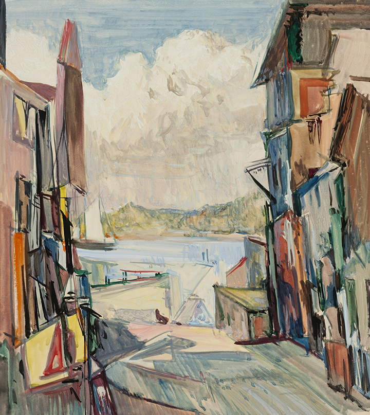

“Cityscape in Motion”
Alicia Martínez (Mexican-American, b. 1955)
Mixed media collage, 1987 Martínez layers photographs, newspapers, and acrylic paint to create a fragmented view of urban life in the late 20th century. Her work reflects themes of migration, adaptation, and cultural blending in modern cities.